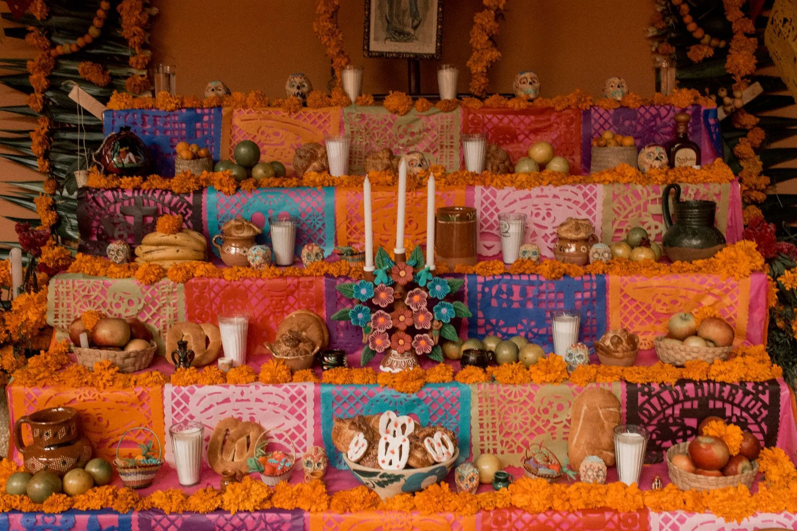

November 1 to 2
Día de los Muertos lesson: teach the days, the ofrenda and why it is not Halloween in 30 minutes
A free, no prep Día de los Muertos lesson for grades 3 to 12: what November 1 and 2 are, how to read an ofrenda, why it is not Halloween, and UNESCO's listing.
What your class will see
Press Teach it now and the board plays these in order. Click any slide to start there.
What it is
Día de los Muertos (Day of the Dead) is a Mexican tradition in which families welcome and remember relatives who have died. It is celebrated mostly in Mexico on November 1 and 2. Mexico's Secretaría de Educación Pública describes November 1 as the day for the "muertos chiquitos," the children, and November 2 as the day for the Fieles Difuntos, the adults. Customs vary from community to community, and UNESCO notes the festivities run from the end of October into early November.
Families build an ofrenda, an altar for the person they are remembering. National Geographic describes an altar de muertos as a small, personal altar representing the life of one person, so it mixes traditional elements with that person's own favorites. Mexican government education materials explain the traditional pieces: the scent and color of marigolds (cempasúchil) lead souls to the altar, candle flames light the way home, papel picado adds color and stands for air, water quenches the thirst of souls after a long trip, and a photo shows which loved one is expected.
It is not Halloween, which falls on October 31. UNESCO describes Día de los Muertos as a fusion of pre-Hispanic religious rites and Catholic feasts, practiced by the Indigenous communities of Mexico, and the Library of Congress notes the name also means Ancestors' Day. National Geographic Kids calls it a joyful time in which dead ancestors are the guests of honor. In 2008 UNESCO inscribed it on the Representative List of the Intangible Cultural Heritage of Humanity under the title "Indigenous festivity dedicated to the dead." UNESCO adds that it was originally proclaimed in 2003.
How to run it
30 minutes, 6 steps. The time on the left is when each step starts.
-
0:00
Warm-up
3 minOn the boardA table is set for guests who are not coming through the door. It has candles, flowers, a glass of water, their favorite food and a photo. Who is the table for? Why would someone set it?
You do- Read the question aloud. Students write a one sentence guess.
- Take three guesses aloud. Do not correct anyone yet.
Say: Keep your guess. By the end of class you will be able to check it.
-
3:00
The days and the idea
5 minOn the board- November 1 and 2: Mexican families remember relatives who have died. In the tradition, November 1 is for children and November 2 for adults.
- An ofrenda is a small, personal altar for one person, with that person's favorite foods and things.
- Marigolds, candles, papel picado, water, bread and a photo each have a meaning on the ofrenda.
- It is not Halloween: its roots are Indigenous ancestor traditions joined with Catholic feast days, and its purpose is to welcome and remember relatives.
- 2008: UNESCO lists it as "Indigenous festivity dedicated to the dead." It was first proclaimed in 2003.
You do- Read the five facts aloud, one slide at a time.
- After the first fact, ask who guessed the table was for remembering someone.
- Tell students they can listen without sharing. Some students may have lost someone close, and this holiday is about love and memory.
Say: Families treat this holiday with care, so we will too.
-
8:00
What each piece is for
6 minOn the boardEach piece on this list has a job. el cempasúchil (marigold): its color and scent lead souls to the altar. la vela (candle): its flame lights the way back home. el papel picado (cut paper): adds color and stands for air. el agua (water): quenches the thirst of souls after a long trip. el pan de muerto (bread of the dead): shows affection for the dead. la comida favorita (favorite food): pleases the dead with their own dishes. el retrato (photo): shows which loved one is expected. la calaverita (small skull): a symbol of death in Mesoamerican cultures.
You do- Read each line aloud and have students repeat the Spanish name. Say cempasúchil as sem-pah-SOO-cheel.
- Read three jobs without the names, for example "quenches the thirst" and "shows which loved one is expected," and ask which piece does each job.
- Point out that these meanings come from Mexican government education materials, and that families and regions explain some pieces in different ways.
Say: Learn the job first. Then a table full of objects becomes a message you can read.
-
14:00
Read an ofrenda
9 minOn the boardAbuela Rosa's ofrenda (an invented example): a photo of a woman with glasses. A path of marigold petals. Four candles. A glass of water. Pan de muerto. A plate of her tamales. A cup of sweet black coffee. Knitting needles with purple yarn. A small radio. Sort each item: traditional piece or personal item? Then finish two sentences: "Rosa liked ___. We know because ___."
You do- Pairs draw two columns, traditional pieces and personal items, and sort the list. Next to each traditional piece they write its job from the last step.
- Reveal the sort. Traditional pieces: photo, marigold path, candles, water, pan de muerto. Personal items: her tamales, her coffee, the knitting needles and yarn, the radio. Favorite food is a traditional piece, and the specific dish is what makes it hers.
- Pairs finish the two sentences, then three pairs read them aloud.
- Students may invent their own person for any writing. No one has to name a real family member.
Say: The traditional pieces are shared. The personal pieces are what make it Rosa's table and nobody else's.
-
23:00
Same week, different holidays
4 minOn the boardHalloween is October 31. Día de los Muertos is November 1 and 2. Give one reason these are not the same holiday.
You do- Ask for one reason from each pair.
- Add the three from the facts if students do not name them: different roots (Indigenous and Catholic), a different purpose (welcoming and remembering relatives), and symbols with their own meanings.
- Do not rank the holidays. The point is that they are separate.
Say: Two holidays can sit next to each other on the calendar and still be about very different things.
-
27:00
Exit ticket
3 minOn the boardName one piece on an ofrenda. Say what it is for.
You do- Students answer on a scrap of paper and hand it to you at the door.
Discussion questions
Open an answer when you want it.
Why does an ofrenda include a person's favorite foods and objects, and not only the traditional pieces?
An ofrenda remembers one particular person. National Geographic describes it as a small, personal altar for one life, and Mexican education materials say the food is there to please the dead with their own favorite dishes.
UNESCO's title is "Indigenous festivity dedicated to the dead." What does that title tell us about where Día de los Muertos comes from?
UNESCO says it is practiced by the Indigenous communities of Mexico and joins pre-Hispanic religious rites with Catholic feasts. Its roots are Indigenous and Catholic.
Why would a family set out candles and flowers and not only a photo?
In the tradition, the flame lights the way home and the marigold's scent and color lead the souls to the altar. The photo shows who is expected, and the other pieces help the visit happen.
Is every family's ofrenda the same? How do you know?
No. Each altar honors a different person, and customs vary by community. Mexico's Secretaría de Cultura describes a Chatino community in Oaxaca, Santa María Yolotepec, whose celebration runs from October 28 to November 3, with the children's altar ready on October 29 and the altar for the adult dead finished by midday on October 30.
Exit ticket
Name one piece on an ofrenda and say what it is for.
Any of these: marigolds lead souls to the altar, candles light the way home, papel picado adds color and stands for air, water quenches thirst, pan de muerto shows affection, favorite food pleases the dead, a photo shows who is expected, a calaverita is a symbol of death in Mesoamerican cultures.
Make it fit your class
Younger students
For kindergarten to grade 2, teach only that families remember people who have died on November 1 and 2, and three pieces: marigolds, candles and a photo. Students draw a photo frame and tell you one thing the person liked, and you write it down. Offer a made-up person so no child has to name someone they lost.
Older students
For grades 9 to 12, read UNESCO's description of the festivity and ask how it treats Día de los Muertos as something practiced by the Indigenous communities of Mexico, and what it means that UNESCO describes a fusion of pre-Hispanic rites and Catholic feasts. Then compare the general picture with the Secretaría de Cultura's description of one Oaxaca community to see how local customs differ.
Spanish class version
This lesson is built for Spanish class. Run the pieces step and the Abuela Rosa step in Spanish and keep the English board as support. Both el Día de los Muertos and el Día de Muertos are in common use.
- el Día de los Muertos, el Día de MuertosDay of the Dead
- la ofrendathe altar with offerings
- el difunto, la difuntathe person who has died
- el cempasúchilthe Mexican marigold
- la velathe candle
- el papel picadocut paper banner
- el pan de muertobread of the dead
- el retratothe portrait, the photo
- la calaveritathe small skull
- guiarto lead the way
- recordarto remember
Task: Students write four sentences in Spanish about the ofrenda. Frames: El/La ___ sirve para ___. En la ofrenda de Abuela Rosa hay ___ porque ___. A Rosa le gustaba(n) ___. Challenge: add one sentence with porque that explains why a family would include a favorite food.
Want it printed? These files from our TPT store go with this lesson: Dia de los Muertos Bundle, Altar de Muertos Craft, Altar de Muertos Craft en Espanol.
Where the facts come from
- UNESCO, Indigenous festivity dedicated to the dead (Representative List of the Intangible Cultural Heritage of Humanity). Used for the listing title, the 2008 inscription, the 2003 proclamation, the pre-Hispanic and Catholic fusion, and the end of October to early November timing.
- Nueva Escuela Mexicana (Secretaría de Educación Pública), Elementos básicos para la ofrenda de Día de Muertos. Used for the meaning of cempasúchil, copal, salt, pan de muerto, food, water, papel picado, candles, the portrait and calaveritas.
- Nueva Escuela Mexicana (Secretaría de Educación Pública), Día de muertos, una costumbre muy mexicana. Used for November 1 for the muertos chiquitos, November 2 for the Fieles Difuntos, and the favorite foods on the ofrenda.
- Gobierno de México, Conoce los elementos de la ofrenda del Día de Muertos. Used for the second government description of each ofrenda piece, including papel picado as air.
- National Geographic Kids, Day of the Dead. Used for November 1 and 2, ancestors as guests of honor, a joyful time, favorite foods and objects on the altar, and the Aztec and All Souls' Day roots.
- National Geographic Education Blog, Who Celebrates Dia de los Muertos?. Used for an altar de muertos as a small, personal altar representing the life of one person.
- Library of Congress, Folklife Today, Graphics for Halloween and Dia de Muertos. Used for the name meaning Day of the Dead and Ancestors' Day, and the merging of Indigenous ancestor celebrations with the Catholic All Souls Day.
- Secretaría de Cultura, Sistema de Información Cultural, Conmemoración de Todos los Santos. Used for the example of one Chatino community in Oaxaca, with its October 28 to November 3 dates and altar deadlines.
Image credits
- Beautiful Altar with Candles and Decorations for Dia de Muertos by Chris Luengas, Pexels License. Source.
- Decorations and Fruits on Altar for Dia de Muertos in Mexico by Chris Luengas, Pexels License. Source.
- Colorful Sugar Skulls for Dia de los Muertos Celebration by INOCENTE SANCHEZ GUADARRAMA, Pexels License. Source.
- Vibrant Marigolds for Day of the Dead Celebration by Shiebi AL, Pexels License. Source.
- Food and Decorations on the Table for the Day of the Dead Celebrations in Mexico by Brunxs, Pexels License. Source.
- Carved Halloween Pumpkins with Illumination Inside by Tom Fisk, Pexels License. Source.
- Ofrenda en Mixquic I by J Mndz, CC BY-SA. Source.
- Calavera Azul con Luz de Vela by Marco Ramos, Pexels License. Source.
- Isla Pacana, Noche de Muertos 03 by LBM1948, CC BY-SA. Source.
- Traditional Day of the Dead Bread with Marigolds by Roberto Carrillo, Pexels License. Source.
- Papel picado in Tijuana - paper banners - Dia de los Muertos 5439 by Thirty two, CC BY-SA. Source.
- Flowers and Sugar Skulls on Ofrenda for Dia de Muertos by Brunxs, Pexels License. Source.
- Altar with Burning Candles for Dia de Muertos by Chris Luengas, Pexels License. Source.


Updated October 31, 2026